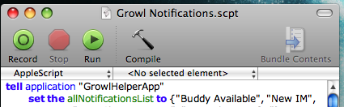
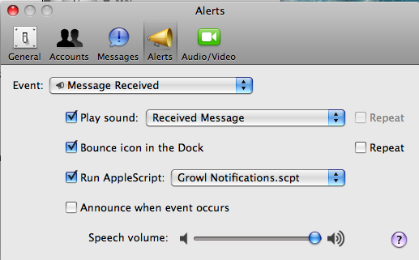

iChat Growler
iChat Growler is a simple Applescript that adds support for Growl system notifications when messages are received in iChat in the background. This script has only been tested using Mac OS X Leopard (10.5). I cannot guarantee that it will work with previous versions.
Download & Install
1. Make sure you are running 10.5 or later and have Growl installed and running.
2. Download the archived script.
3. Unzip the archive and copy Growl Notifications.scpt to ~/Library/Scripts/iChat
You may have to create the Scripts and/or iChat folder if they do not already exist. ~ represents your home folder.
4. Double-click the script file. This should launch Script Editor. Push the green Run button at the top. This will register the script with Growl. Quit Script Editor.

5. Launch iChat and go to iChat -> Preferences... (cmd-,) -> Alerts.
6. Choose the "Message Received" event and check Run AppleScript. Select Growl Notification.scpt.

7. Repeat step 6 for "Buddy Becomes Available", "Message Received in Chat Room", "Incoming File Transfer", and "File Transfer Completed"
8. That's it! Enjoy. You should now see Growl notifications from iChat when iChat is in the background.
Feel free to contact me at neil [at] metamorphium if you have any questions or comments.
Changelog
March 20, 2010 - version 1.1
- Updated to add File Transfer Completed Notifications.
November 25, 2008 - version 1.0
- Initial release.